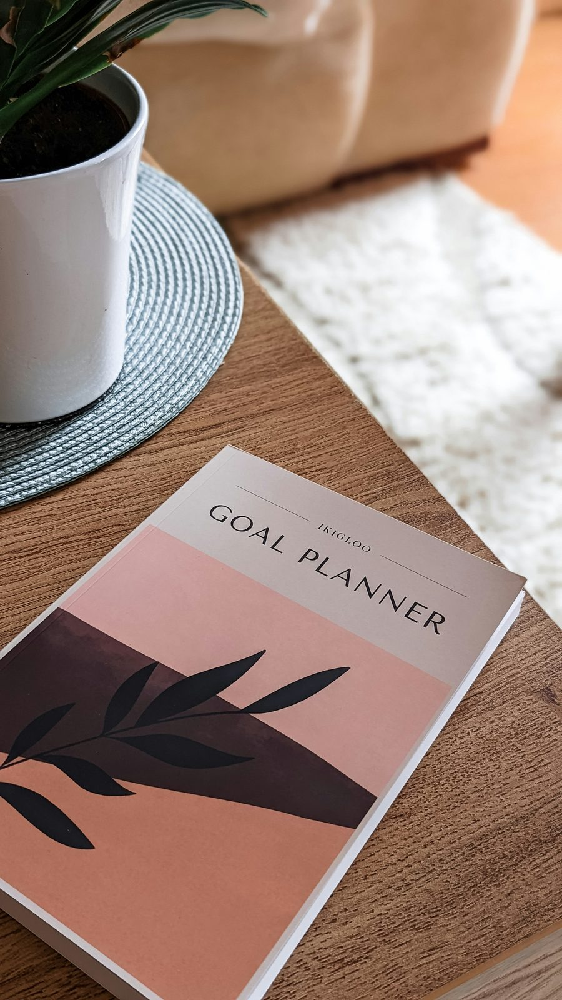

Professional Development
Where I am now, and where I want to go as a teacher.
I keep reflecting on feedback from my mentor and STS partner so that I can improve as a teacher.
Grow

Skills I Am Developing
Skills I am working on as a student teacher.
Current Focus
Classroom Management
Keeping the class orderly and every learner engaged in the lesson.
ICT in Teaching
Using ICT tools effectively in my lessons.
Assessment
Improving how I check what learners have understood.
Lesson Delivery
Presenting my lessons clearly and confidently.
Recent Learning & Progress
Year One School Observation
My first school observation, in Year One.
Child Study & Teaching Philosophy
Wrote my first teaching philosophy statement.
Year Two, Semester One
Induction and study of the Basic School Curriculum.
Teacher Professionalism & Reviewed Philosophy
Observed teachers' behaviours and attitudes, and reviewed my teaching philosophy with my mentor and STS partner at St Anthony R/C Basic School, October 2026.
Teaching Portfolio
Gathering my journal, score sheet and reflections into this e-portfolio.
Career Goals
Short-Term Goals
Complete my B.Ed in Social Studies, keep building my classroom experience, and become confident using ICT in my teaching.
Long-Term Goals
Become a patient, well-prepared and fair Social Studies teacher, and keep growing through further training.
My Growth Mindset
I will keep reflecting on feedback to improve.
Education Foundation
B.Ed (Social Studies)
Distance Education Programme, University of Ghana, Legon
My B.Ed studies give me the knowledge and training I need for the classroom.